KevireneDao ▶ 什么是 KevireneDao？ KevireneDao 是一个 NFT（不可替代代币）集合。存储在区块链上的数字艺术品集合。 ▶ 有多少 KevireneDao 代币？ 总共有 969 个 KevireneDao NFT。目前
Kibatsu Bots ▶ 什么是 Kibatsu 机器人？ Kibatsu Bots 是一个 NFT（不可替代代币）集合。存储在区块链上的数字艺术品集合。 ▶ Kibatsu Bots 代币有多少？ 总共有 10 个 Kibatsu Bots NFT。目前，57 位
Kibatsu Mecha 这是 Kibatsu Corp. 品牌的创世纪系列，也是 Megacity Kibatsu 传说的组成部分，这是由艺术家和动画师 Jerry Liu（又名SloppyJ44）开发的世界和故事，你拥有一两个 Kibatsu Mecha 吗
Kickz Pass Genesis Kickz Pass Genesis 将提供 250 个。薄荷是免费的 + 汽油和完全白名单销售。所有未售出的 NFT 将被铸造到社区钱包中。我们的项目由德正通孵化。他们的持有者将完全融入 Kickz Pass
Kids ofthe World ▶ 什么是 KidsOfTheWorld？ KidsOfTheWorld 是一个 NFT（不可替代令牌）集合。存储在区块链上的数字艺术品集合。 ▶ 有多少 KidsOfTheWorld 代币？ 总共有 20,000 个 KidsOfTheWorld NFT
Kindergarten BabyApes (KBA) 再建五所学校！- 20% 的版税用于在世界各地建造更多学校。幼儿园 BabyApes (KBA) 是生活在以太坊区块链上的 10,000 只 BabyApes 的集合。 KBA 的故事始于父母离开他们的孩子，来到一个
KING XEROX DROPS ▶ 什么是 KING XEROX DROPS？ KING XEROX DROPS 是一个 NFT（不可替代令牌）集合。存储在区块链上的数字艺术品集合。 ▶ 有多少 KING XEROX DROPS 代币？ 总共有 10 个 KING XEROX DROPS NFT。
KING'S GALA 随机生成的个人资料图片是对我们面前的 PFP 的致敬。当我们在 INCOOOM 进入 TAKEOVER EPOCH 时，我们必须永远记住我们来自哪里。享受国王的所有荣耀，因为无论您踏入元宇宙，
KingFrogs 然后一个阳光明媚的日子，一只 KingFrog 出现在每个 SupDuck 持有人的平房中，鸭子不再孤独！ KingFrog’s 不仅给鸭子们带来了友谊，还为持有者带来了终极实用性——利用他们的 $VOLT
Kishuverse [Kishuverse 超级稀有 NFT 赠品——等你来拿！嗨 Kishu 社区，随着市场继续对所有参与者进行最艰难的考验，Kishu 表现强劲。你知道我们多么喜欢用一些特别的奖品和赠
Kitbash Boogers 该集合由以太坊区块链上的 1,111 个独特的 1/1 NFT 组成。该系列中的每个单独的 NFT 都是一件 100% 手工制作的原创艺术品，不是以编程方式生成的。使用所有四个系列的特
KitPics ▶ 什么是 KitPics？ KitPics 是一个 NFT（不可替代令牌）集合。存储在区块链上的数字艺术品集合。 ▶ 有多少个 KitPics 代币？ 总共有 5,270 个 KitPics NFT。目前，1,
Kittys Bar Drinks Shop artonomous 是一种人工智能机器，可以用画笔在画布上作画。虽然它已经可以画出与人类相当的肖像画，但摄影师 Kitty Simpson 和 AI 艺术家 Pindar Van Arman 已经联手教它美术的微妙之处。
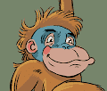 Klapes Klapes 是一个包含 5,000 个以编程方式生成的 NFT 的项目，这些 NFT 完全独一无二，100% 归您所有。Klapes 建立在 Klaytn 区块链上，让您可以加入一个有趣的社区，在
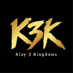 Klay 3 Kingdoms P2E来了， 让你忘记E而专注于P ！ 谁将与英雄们一起平定动荡的时代，统一世界？ 每个角色获得 165 个限量版 NFT， 并享受跨 P2E、PFP 和 metaverse 的实用程
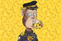 KLAY APE CLUB 漫画家“HAPPY D”制作，沙盒游戏 P2E , 3X3 地产 向儿童癌症基金会捐赠 1000 万韩元拥有 Klay ape NFT 并成为我们的高级会员。 因气体爆炸而面临生存危机的“以太坊
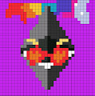 KLAY CRAZY COINS ▶ 什么是克莱疯狂硬币？ KLAY CRAZY COINS 是一个 NFT（非同质代币）集合。存储在区块链上的数字艺术品集合。 ▶ 有多少 KLAY CRAZY COINS 代币？ 总共有 4 个 KLAY CRAZY COINS NFT。目前
KlayCity MintPasses 。DISTRICT 所有者可以将资产货币化并享受游戏中的体验。您的 DISTRICT 授予访问会员专属福利、收集 LAY 以赚取 ORB 并在元界治理中投票。KlayCity 是
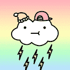 KlayCloud KLAY CLOUD 也是一种被动收益的 NFT，持有者将通过持有 KLAY CLOUD 不断获得收益。区块链解决方案提供商。 启动您自己的 NFT 并进入元界。 第一季度，启动网站和社区，克
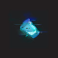 Lazy Drinks Official 懒惰小熊，2022 年 5 月 18 日，向所有 Lazy Lions 所有者空投了 10,000 份 Lazy Drinks。Lazy Lions 可以饮用果汁、牛奶或极为罕见的 Lazy Special 来制作 Lazy Cub。通过购买
Lazy Lions 为什么他们给了我们这么多的描述呢？我们很懒。国王，皇后 - 这是另一个懒惰的狮子更新。让我们从 ROARwards 开始吧…… ROARwards 本月的 ROARwards 获奖者是…… 27Z — 恭喜您赢得 Lion
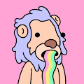 Lazy Loodles 懒惰的面条，Lazy Loodles 是一个社区驱动的集合，包含 5,000 个随机生成的 NFT。 立即加入 Lazy Loodles 王国！为国王打造的岛屿！这个私人岛屿位于一个安全的绝密位置
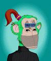 LazyBoredApes Lazy Bored Apes 是 1000 个 NFT 的集合——生活在以太坊区块链上的独特数字收藏品。每个 Lazy Bored Apes 都是独一无二的，并以编程方式从 100 多种可能的特征中生成，包括表情、头饰
Le Anime by toomuchlag 英雄！将这个系列中的所有 NFT 合并在一起，以创建强大的英雄、获得关卡、创建独特的组合等等。Le Anime 于 2021 年 3 月 5 日推出，是有史以来第一个由艺术家创作
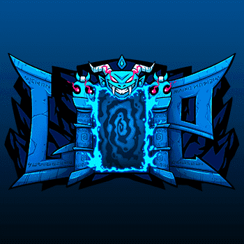 League of Prophets Official 5555名先知已被上古圣者召唤。他们的任务——恢复长者的经济繁荣。 Exalted Burn 将在发射后 24 小时开始 - 在 Naraka 的坑中牺牲 5 x Prophet NFT 以召唤 Exalted Prophet NFT。 只有勇敢
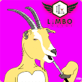 LimboLoungeGOATClub 欢迎来到加密休息室山羊俱乐部酒廊在迈阿密放松。 你应该休息一下。与他人分享成为 GOAT 的乐趣。喝水烟，喝点咖啡，并与加密空间中的其他人联系。 您现在可
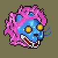 LionBob by Artlu Sneged 由 Artlu Sneged 设计的 LionBob。Lionbob是 555 只全能狮子的像素化集合。 我们在以太坊区块链上建立了一个生态系统。我们感谢您， 尤其是艺术家从来自
Lobby Lobsters Lobby Lobster NFT 在过去 7 天内售出 1 次。大堂龙虾的总销售额为 31.47 美元。一个 Lobby Lobster NFT 的平均价格为 31.5 美元。有 2,570 名 Lobby Lobster 所有者，拥有 10,000 个代币的总供应量。 什么是大堂龙
loomlocknft (Wassies) 数字遇见物理。快来了。 路线图！终于来了！我们一直在等待的时刻已经到来，请欣赏这幅美丽的艺术品。这解释了我们明年的计划！ Loomlock 是由著名的 Crypto Twitter 人物 Loomdart
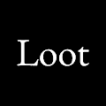 Loot (for Adventurers) 战利品是随机生成并存储在链上的冒险家装备。故意省略统计信息、图像和其他功能以供其他人解释。随意以任何你想要的方式使用 Loot。 8,000 个装满战利品
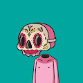 Los Muertose Los Muertos 暗黑破坏神 NFT 在过去 7 天内售出 38 次。Los Muertos Diablo 的总销售额为 24.51 万美元。一个 Los Muertos Diablo NFT 的平均价格为 645.1 美元。有 519 名 Los Muertos 暗黑破坏神所有者，拥有 1,000 个代
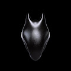 Lost Eden Origins 一切都重生了。起源是失落伊甸园中的第一批生物。我们迷路了。 什么是失落的伊甸园起源？ Lost Eden Origins 是一个 NFT（不可替代令牌）集合。存储在区块链上的数
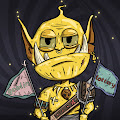 lotterygoblin lotterygoblin NFT 在过去 7 天内售出 1 次。lotterygoblin 的总销售额为 0.22 美元。一张彩票地精 NFT 的平均价格为 0.2 美元。共有 5,112 名彩票妖精拥有者，总共拥有 9,989
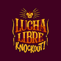 Lucha Libre Knockout Lucha Libre Knockout NFT 在过去 7 天内售出 3 次。Lucha Libre Knockout 的总销售额为 31.5 美元。Lucha Libre Knockout NFT 的平均价格为 10.5 美元。共有 3,134 名 Lucha Libre Knockout 所有者，拥有 10,000 个代币的总供
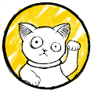 Lucky Maneki Lucky Maneki NFT 在过去 7 天内售出 10 次。Lucky Maneki 的总销售额为 121.95 美元。一个 Lucky Maneki NFT 的平均价格为 12.2 美元。有 3,130 名 Lucky Maneki 所有者，总共拥有 14,216 个代币。 以日本招财猫为
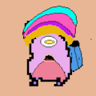 MadMenHamsters v2 10,000 个独特生成的有趣像素化仓鼠智能合约 即将上线 特别版和惊喜。 预售 50 MadMenHamsters 10,000 即将揭晓。 不仅仅是一个项目，更是一个生命项目，诊治老婆的病。 什么是 MadMenHamsters v2
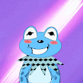 Mappet Frogs Club Mappet Frogs Club 是 5131 只随机生成的青蛙的集合。 Mappet 青蛙 Iggy 是布偶表演中的 kermit 的兄弟。幻想着拥有自己的节目，他最终决定在多边形区块链中举办自己的节目。这为 Iggy 打造
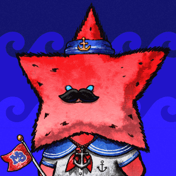 Marine Blues Reboot Club V2 Marine Blues Reboot Club 是以太坊网络发行的 NFT 项目，共包含 10,000 个 PFP。列出的企业产生的所有利润。 Marine Blues Reboot Club (MBRC) 是一个基于以太坊的 PFP NFT 项目，它改造了备受喜爱的第一代
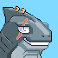 Marine Marauderz 2D Marine Marauderz 的家，7777 Sharks 正在执行一项进入元宇宙的慈善任务。 The Marine Marauderz 于 2021 年 11 月推出，是 7,777 条独特且随机生成的像素化鲨鱼在以太坊区块链上游泳的集合。Ma
Mask Machina 由 Mask Network 和 DigiNation 创建的 512 个 Mask Machina 的集合， 它们存在于 Ethereum 区块链上。每个面具机器都是独一无二的，但其中一些是罕见的。 所有 Mask Machina 持有者都可以访问 DigiNation 元宇宙，并从
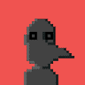 MaskedWeirdos MaskedWeirdos 是 Polygon 区块链上 10K 个独特的 NFT +2 个特殊字符的集合。（0% 版税） 5.8K 代币已上架，其余代币即将上市。 这些天最好保持匿名，所以戴上你的面具，选择你最喜欢
Master9Eyes 999 个 M9Ξ NFT 的 9 个集合 Master9eyes 是一个收藏项目，它将让长期收藏家的收藏获得奖励。 由Daytoner 创作，他是一位著名的概念艺术家，为 Epic Games、B
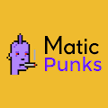 MaticPunks MaticPunks 是 Polygon(Matic) 区块链上的 NFT10,000 个独特的 MaticPunk 开放供在 Polygon 区块链上铸造 这 10,000 个 MaticPunk 中的每一个都具有根据定义的稀有系统使它们独一无二的属性。它是区块链上最快的朋克。通